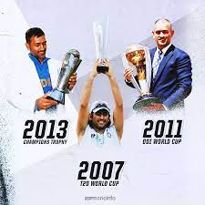
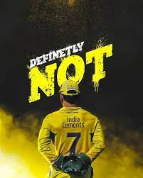

M S Dhoni


MS Dhoni is the only captain in the history of Cricket to win all ICC trophies.
Under his captaincy, India won the 2007 ICC World T20, the 2010 and 2016 Asia Cups,
the 2011 ICC Cricket World Cup and the 2013 ICC Champions Trophy.
Debut of MSD's Cricet Career
- DOB 7 July 1981.
-
Test Debut 2 December 2005 v Sri Lanka.
-
ODI Debut 23 December 2004 v Bangladesh.
-
T20 Debut 1 December 2006 v South Africa.
Records of MSD in his Entire Career
- T20 World Cup 24 September 2007 V Pakistan
-
ODI World Cup 2 April 2011 v Sri Lanka.
-
Champions Trophy 23 June 2013 v England.
‘The King Kong. There’s no one close to him. Ravi Shastri says MS Dhoni is the greatest white-ball captain ever’
-- Former Indian Cricket Team Coach
Click Here if you need to know more about MSD(Captain Cool).
MS Dhoni-wiki.